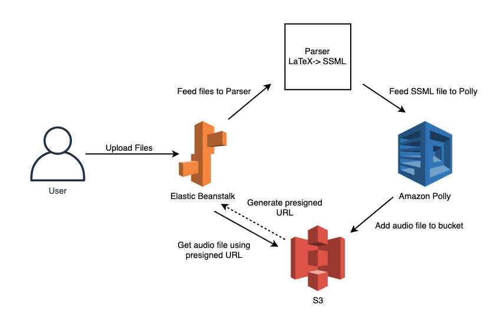
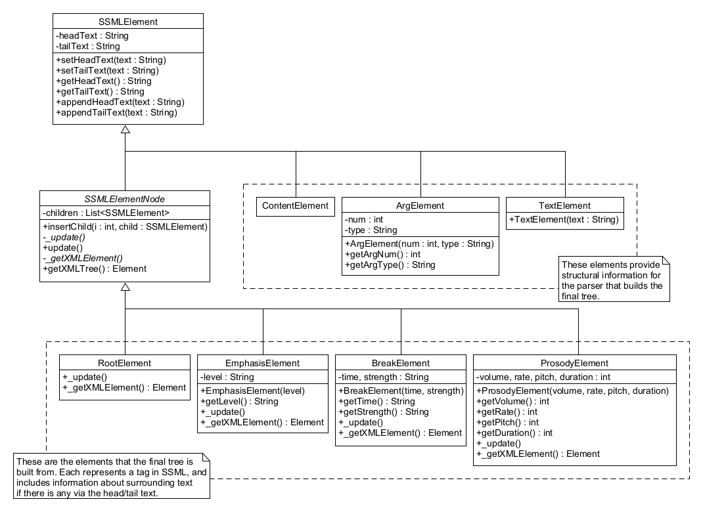

Tex2Speech is a flexible, user-friendly, easy to use text-to-speech web application for converting LaTeX documents to spoken audio (.mp3 format).
GitHubTo run the application locally, you need to have an Amazon Web Services account. Please create one before continuing. Once you have your AWS account, create/get your AWS access keys which is necessary to make programmatic calls to AWS. You will also need to have Python/Pip installed.
git clone https://github.com/hutchresearch/latex2speech.git
python3 -m venv env then run your virtual environment source env/bin/activatepip3 install -r requirements.txt which installs other dependencies needed.pip3 install awscli then run aws configure, add in your AWS Secret Key and Access Key. When it prompts you region, add us-east-1.python3 application.pyDemo here
Our application is built using the Flask framework. The user will interact with our web application and upload their files that they want sythesized. Once the application receives the files from the user, the files will be pre processed and then given to our Parser.
The Parser converts the LaTeX document into Speech Sythesis Markup Language (SSML). SSML is used since it's a markup language for speech sythesis applications. It allows us to control how words, sentences are pronunced and gives us more control of how the document will be read.
Once the Parser converts the files to SSML format, the new SSML document is fed to Amazon Polly which converts it into a .mp3 file. Then stored into an S3 bucket. To access the .mp3 file, a generaged presigned URL is created so the user can interact with the S3 bucket temporarily to grab their audio file which they can then download.
Note: Elastic Beanstalk is used in production matters, currently we do not have the application running on this instance.

The Web Application module is what the user will use to interact with our Tex2Speech application. It has many functions such as:
Pre processing is done right after the user hits submit when they upload their necessary documents. What's being done in this small module is it's getting all the documents ready to be fed into TexParser. Some actions that the pre processing module does is as follows:
The TexParser is what converts the LaTeX files into SSML files. Its function is similar to a LaTeX to pdf compiler, except that its goal is to parse LaTeX into a stream of text, marked up with SSML, for use in text-to-speech generation. To do this, we use the help of TexSoup to easily navigate and modify the LaTeX documents. The input LaTeX files into TexParser have been preprocessed through the previous module.
We designed a system that was both robust and flexible enough to effectively cover many possible conversion scenarios, while still being feasible to implement. An external XML file is used to actually specify how every command, environment, and command within an environment should be said via SSML. To use this XML file, we decided on creating a MVC design that used an intermediate database to handle all parsing of the XML file. This is not only done to separate code and leave flexibility to change the database implementation, but the conversion database also creates all the SSMLElement objects that are used to create the SSMLElement tree.
Creating an intermediate SSMLElement tree from our own proprietary objects was a decision made for the following reasons:
SSMLElements were designed with their eventual final form as a python ElementTree in mind, the most significant consequence of which is the headText and tailText attributes. This has a 1 to 1 correspondence with how the ElementTree package stores text within/after a XML node, and so makes it easier for us to convert each node to an XML node afterward. The structure of the classes used in the SSMLElement tree are noted in the following UML diagram:
Under the root LaTeX node there can be either <cmd> or <env> tags. The corresponding name must be specified as an attribute. The type corresponds to whether it is a table command or mathmode command. If it is not, leave it blank. The family attribute corresponds to configurations. For example LaTeX commands: emph, textbf, em are all type 'bold'. So in these three commands we would have family = "bold".
Inside the cmd nodes any SSML elements can be used, along with the tags <text> or <arg>. Inside env nodes there are two separator tags called <says> and <defines>, where <says> defines how the environment will be read out and <defines> defines (or redefines) commands within the specific environment. Within the <says> tag, a <content> tag must be used to denote the relative position of the environments contents.
Sample
<latex>
<cmd name=”foo” type = "none" family = "">
asdf
<prosody strength=”strong”>
more text
<arg num=”2”/>
</prosody>
<arg num=”1”>
</cmd>
<env name=”bar” type = "none" family = "">
<says>
<break time=”3ms”/>
qwerty
<content/>
<arg num=”3”>
</says>
<defines>
<cmd name=”baz” type = "none" family = "">
buz
</cmd>
</defines>
</env>
</latex>
From the following LaTeX...
\foo{a}{b}
\begin{bar}{c}{d}{e}
I’m just some text
\baz
\end{bar}
... the parser should generate ...
<speak>
asdf
<prosody strength=”strong”>
b
</prosody>
a
<break time=”3ms”/>
qwerty
I’m just some text
buz
e
</speak>
The mathmode component is what renders LaTeX math commands into SSML format. When TexParser encounters a command that is of type mathmode, the following statement will be thrown into the mathmode component for proper SSML rendering.
Building off of augustt198 latex2sympy project. We use ANTLR to convert the LaTeX mathmode into Sympy objects. Then we convert the Sympy objects into the proper SSML format.
The Sympy to SSML portion of this mathmode parser uses XML and the sympy library to parse each object. Documentation in regards to the XML structure can be shown below. When parenthesis are encountered within each sympy math object, we add start parenthesis and end parentheses within the document to ensure that our users can comprehend a math equation.
Each sympy object supported by sympytossml is represented by an entry in static/sympy_funcs.xml. The tag of this entry must be the name of the sympy class, which can be found on docs.sympy.org. The program will use this entry to parse through the function in a linear fashion. It parses through the XML tags and the args array of the Sympy class in parallel, so the first instance of in the XML element is always the first argument in the Sympy args array, unless it is after a <repeat /> tag.
<text>
Anything inside this tag will be appended to the final string in its entirety. There should be no spaces before or after the text
<arg \>
An argument from the sympy function.
<subarg \>
An argument from a subarray within the sympy function's main arg array. See Sum for an example.
<repeat \>
Sets the repeat point. If this tag is present, when the parser reaches the last XML element, it will loop back here until the end of the Sympy args array is reached.
As a convention, text at the beginning of a function does NOT start with "the". For example: <text>integral of</text> , NOT <text> the integral of</text>
<!--Name of sympy class that represents addition-->
<Add>
<!--Allows an arbitrary number of arguments-->
<arg />
<!--Everything below this tag will be repeated until there are no more args-->
<repeat />
<!--No spaces before or after 'plus'-->
<text>plus</text>
<arg />>
</Add>
Post processing is necessary after the document is in SSML format. Currently, we have it set to get rid of some various tags. This is due to the fact that some charachters do not process in Amazon Polly and mess up it's rendering causing the file not to render.
The speech sythesis module is what feeds the SSML document into Amazon Polly, outputs to an S3 bucket, and creates the presigned URL so the user can temporarily access their audio file. This is within the aws_polly_render.py file. After the document gets marked up from TexParser, if the LaTeX file has a corresponding .bib file with it, this is when it gets properly rendered into SSML. The reason we don't render the .bib during TexParser is because the .bib is not LaTeX and TexParser that uses TexSoup only expands LaTeX commands.
Features here
Extensive unit testing was performed resulting into 77% code coverage. In the future this will be expanded upon. Since we were using python, we created tests using the built-in unittest module, and then used pytest to discover all the tests in the project. We used Test Driven Development (TDD) and BDD to perform seperate tests.
Bugs are things that shouldn’t happen or need to be fixed, but don't cause the LaTeX file to not properly render. Errors cause the software to terminate execution. Please note the error_log shows a `utf-8` can’t decode byte error. This occurs 22.21% in our failed parsings. This isn’t a concern, and should be taken out of the equation of failure, since this just means that our parser couldn’t grab the contents of the file which is on the file, not our parser.
\def\t{\theta}
\def\T{\theta}
[Mon May 24 01:19:42.135628 2021] [:error] [pid 3286] [remote 172.31.93.62:1509] return codecs.ascii_decode(input, self.errors)[0]
[Mon May 24 01:19:42.135637 2021] [:error] [pid 3286] [remote 172.31.93.62:1509] UnicodeDecodeError: 'ascii' codec can't decode byte 0xe2 in position 1814: ordinal not in rang(128)
This project is available under the MIT license and contributions are welcomed. If you would like to contribute, please fork the repository and create a PR. We would be happy to review it and merge your contribution.